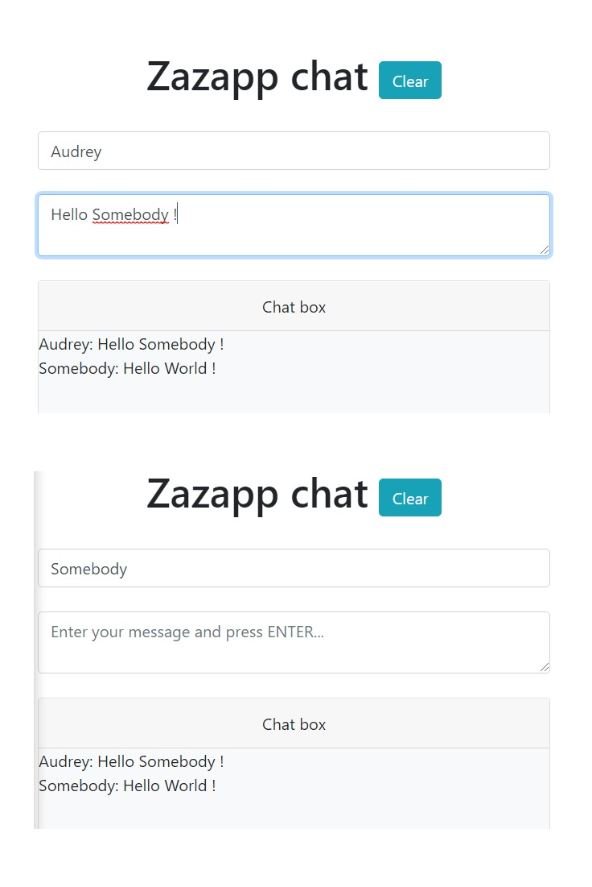

AUDREY KREMERS
Web développeuse
Front-End
Brussels, Belgium
HTML, CSS, JS, PHP
Sass, Vue.js, Laravel
Visual Studio Code, Git
Figma, Sketch
BEE Pro, Email on Acid

De octobre à décembre 2018

De janvier à juillet 2019

De août à novembre 2019
HTML | CSS
Website onepage, reproduction d'un mockup.
Projet de groupe, en 5 jours, après 2 semaines de formation.


HTML | Bootsrap | JavaScript
Website responsive d'une chaîne de restaurant fictive.
Projet réalisé seule, en 5 jours, après 1 mois de formation.
VueJS | API | Bootstrap | Figma
Réalisation d'un mockup avec Figma d'une app météo et développement de cette dernière.
Projet réalisé à 2, en 5 jours, après 3 mois de formation.


Node JS | MongoDB | Socket.IO
Chat avec Socket.IO pour une communication en temps réel et MongoDB comme système de base de données.
Projet réalisé seule, en 5 jours, après 4 mois de formation.
WordPress
Rôle de chef de projet et développeuse pour un projet client.
Projet de groupe, en 5 jours, après 4 mois de formation.


HTML | CanvasJS
Pour le fun, dessins réalisés avec CanvasJS.
Projet réalisé seule, en 2 jours, après 1 mois de formation.